Notre site sur GIMP
| Acceuil | Manipulation avec dessin et texte | Photomontage avec des calques | Environnement | Retouches de photographie | Reference | Exercice |
|---|
| Acceuil | Manipulation avec dessin et texte | Photomontage avec des calques | Environnement | Retouches de photographie | Reference | Exercice |
|---|
Dans cette partie, il sera question de photomontage, c'est-à-dire faire des montages photo ou photoshop.
Ouvrez votre image. Aller dans l’onglet filtre(filter) sélectionner Décor dans ce menu sélectionner fuzzy Border (coin arrondi),
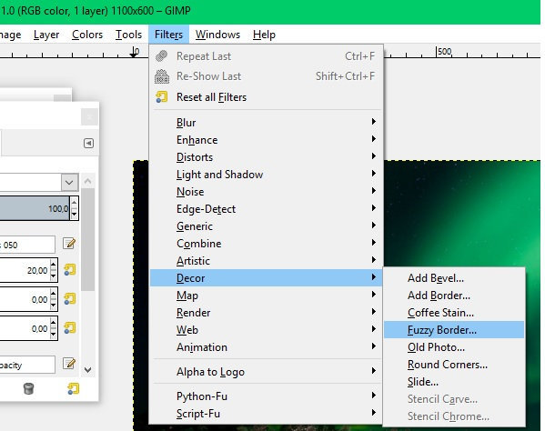Sélectionner les options voulues
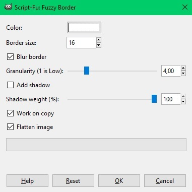Couleur : Détermine la couleur que votre bordure floue aura
Border size : Détermine la largeur de votre bordure floue en pixel et de chaque côté de l’image(haut, bas ,gauche ,droite)
Blur border : L’option sans donne une bordure pixeliser, l’option avec donne une transition plus douce.
Granularity : détermine la grosseur des pixels qui constitue la bordure.
Add shadow : ajoute une fine teinte noire entre l’image et votre bordure.
Shadow wheight(%) : détermine l’intensité de votre ombre (si vous n’avez pas d’ombre ce paramètre est inutile)
Work on copy : L’option sans modifie l’image directement, l’option avec ouvre une autre fenêtre avec les modifications. Une fois vos options choisis cliquer sur ok et le logiciel crée l’image que vous avez choisi avec des bordure floue.
Voici un exemple de photo avec bordure floue.
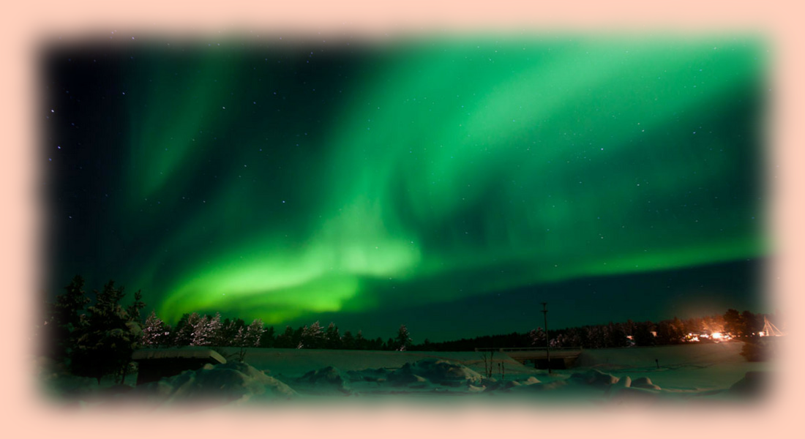Ouvrez avec GIMP l’image que vous voulez découper. En suite sélectionner l’outil de découpage (le petit lasso) à travers le menu outil, la boîte à outil ou en appuyant sur ‘f’.
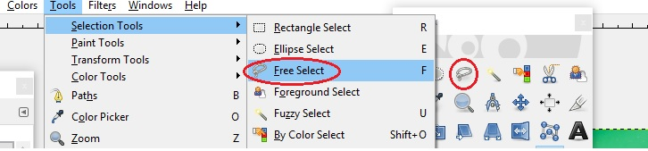Ensuite faite le tour de l’élément dans l’image que vous voulez détacher. Vous devez fermer votre boucle pour que la sélection soit complétée.
Ensuite couper ou copier votre sélection et ajouter là à un fichier vide.
Dans le nouveau fichier ajouter un filtre alpha.

Ensuite sélectionner la baguette magique (ou appuyé sur U) et cliquer sur l’arrière-plans blanc et supprimer le vous devriez avoir un fon quadriller maintenant.
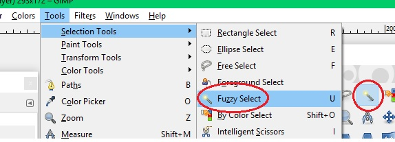Vous avez maintenant une image découpée avec un fond vide (le quadriller indique que le fond est vide).

Vous voulez ajouter un élément à une photo vous avez déjà les compétences. Essentiellement il s’agit d’un détourage que vous avez fait et coller sur une autre image. Si vous avez une nouvelle image vous faites le détourage et au moment de coller votre élément détourer vous le coller sur l’image où vous voulez l’intégrer. Si vous avez déjà un élément sur fond vide vous sélectionner simplement l’élément à l’aide d’un outil de sélection et vous l’ajouter à l’image désirer.
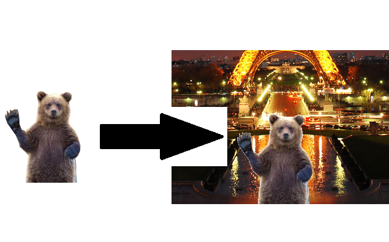Premièrement choisir deux images, l’une qui servira de fondu (c’est à dire qui sera la couche supérieure comme un calque ou une acétate) et l’une qui fera le fond.
Ouvrez votre image fondue. Allez dans l’onglet couche(Layers), sélectionner l’option Mask, ensuite choisissez additionner une couche mask(add layer Mask). Ici l’option qui nous intéresse est blanc (white full opacity). (Vous allez pouvoir vous amusez avec les autres options plus la démarche est identique à celle-ci.)
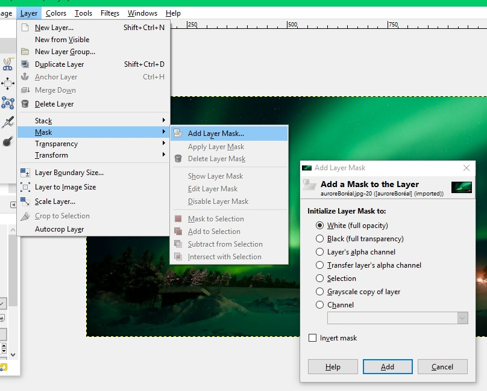Ensuite sélectionner dans votre boîte à outil le trait noir et le fond blanc.
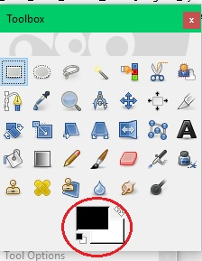Ensuite sélectionner l’outil dégrader dans votre boite à outil.
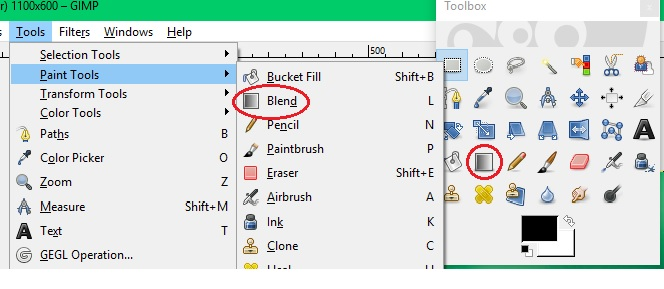Ensuite dans votre image cliquer où vous voulez commencer votre dégrader (Si vous voulez personnaliser vos outils il y a une boîte cet effet), si vous voulez toute l’image vous faites passer le trait sur toute l’image sinon vous arrêter là ou vous voulez que le dégradé s’arrête.
Ensuite vous devez fusionner votre nouvelle couche avec votre image. Pour ce faire vous allez dans l’ongle couche(layers) vous sélectionner appliquer la couche mask (apply layers mask)
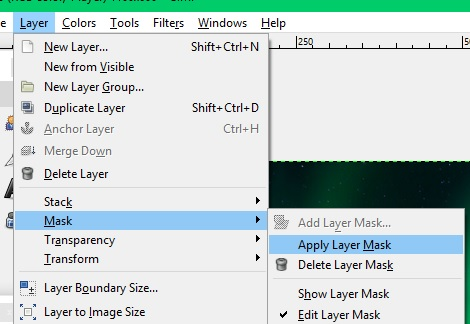Une fois votre image fondue complété vous la sélectionner et vous la copier. Vous l’appliquez ensuite sur votre image de fond et l’ajuster à votre guise. Vous avez désormais deux images fusionner avec un fondu entre les deux.
Pour faire une image fondue dans une autre le processus est simple. S'il s'agit de deux image de même taille ouvrer la première normalement. Pour la seconde ouvrer la avec l'option ouvrir avec un nouveau calque.

Vous vous retrouvez avec avec la nouvelle image qui recouvre la précédente. Aller dans le menu des couche et diminuer l'oppacité jusqu'à ce que l'image vous convienne.

Voici ce le résultat d'une image fusionner avec 50% d'oppacité.

Cette opération est simple vous appliqué les principes expliqués dans le détourage, mais au lieu de détourer un objet pour l’appliqué ailleurs vous détourner l’objet pour faire une forme. Une fois la forme découper vous la supprimer vous ajouter une couche alpha et supprimer les éléments dans votre forme. Vous avez alors une image avec en son sein un espace. La prochaine étape est de prendre votre image avec la forme vide pour l’appliqué sur une autre image de même taille pour que l’espace vide soit comblé par l’image de fond.

 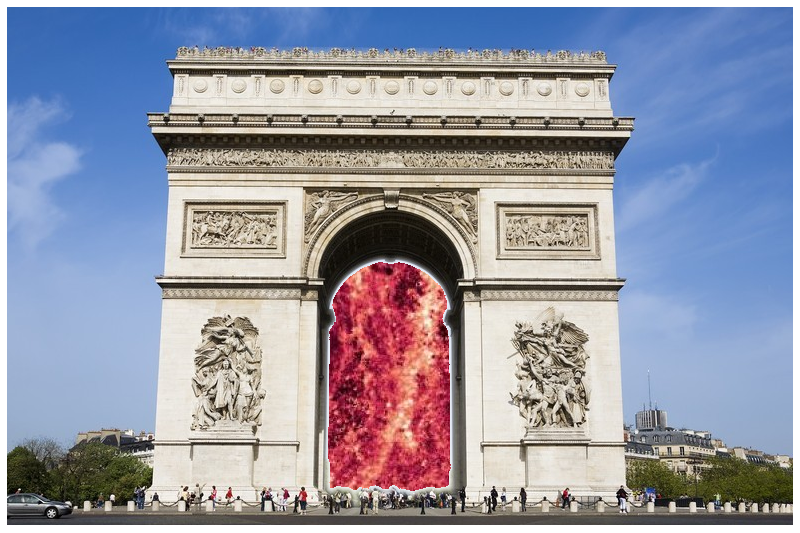
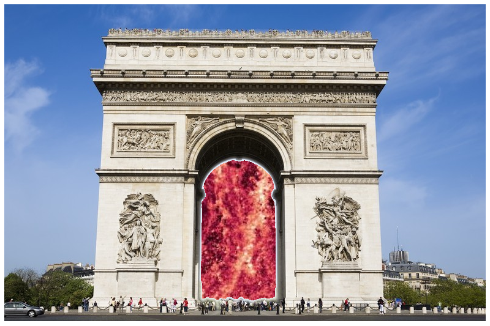